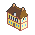
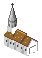
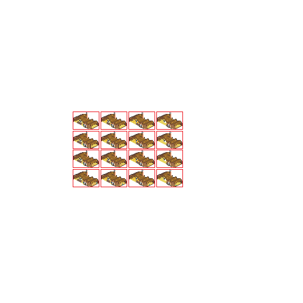
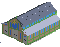
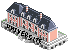
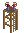
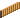
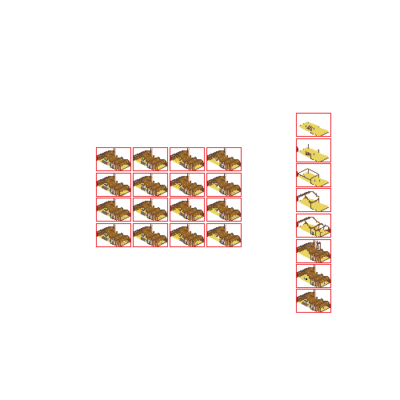
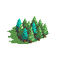
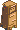

Vous êtes un habitant de la ville de Flex. Tous les jours, quand la nuit tombe, la horde de zombies s'attaque à votre ville. Essayez de survivre tout en gardant votre flex.

MairieLe cœur de la ville. Cliquez pour lancer un vote et débloquer de nouveaux bâtiments. Son coffre commun partage l'or et les objets entre joueurs. Si elle tombe, la partie est perdue.

ÉgliseDéposez-y les reliques trouvées hors ville : chacune rapporte 100 pièces d'or au coffre commun.

ScierieÀ débloquer à la mairie. Une fois construite, elle ouvre le menu de construction des tours d'attaque.

MarchéÀ débloquer à la mairie. Vend armes et objets contre l'or du coffre commun.

UniversitéÀ débloquer à la mairie. Améliorations communes : portée et cadence des tours d'attaque.
À débloquer à la mairie. Au clic, elle annonce le volume et la direction de la prochaine vague.

Tour d'attaqueDeux archers tirent automatiquement sur les zombies. Posable partout, payée avec l'or du coffre et vos planches.

PalissadeBloque les zombies et protège la ville. Construisez-la avec vos planches (touche Z). Les zombies les plus obstinés la frappent.

PotenceÀ débloquer à la mairie. Sur la potence, proposez la pendaison d'un autre joueur : la majorité des votants décide. Attention, les joueurs peuvent aussi se tirer dessus.

ForêtsMassifs infranchissables : ils bloquent zombies et joueurs. Avec une hache équipée, restez à côté pour récolter des planches. Chaque forêt a 5 états de coupe, repousse d'un état par jour. Une forêt entièrement coupée devient traversable.
Chaque nuit à 22h, une vague arrive d'un bord de la carte : 50 zombies le premier jour, deux fois plus chaque nuit suivante. Ils contournent les forêts, attaquent les palissades sur leur passage et visent la mairie. Tuez le chef (le zombie rougi, plus gros) pour désorganiser le groupe. Certains zombies traquent les joueurs, d'autres ciblent vos constructions.

Tour de siègeÀ partir de la 2ᵉ nuit, ces tours avancent lentement sur la ville. Elles écrasent les forêts sur leur passage, se collent à votre palissade et s'ouvrent pour libérer 100 zombies à l'intérieur. Détruisez-les à distance avant le contact (100 PV).
Chargement de la carte…
Appuyez sur Échap pour reprendre.
—
Déposez vos objets ici. Cliquez sur un objet du sac pour le déposer, ou sur un objet du coffre pour le récupérer.
Or du coffre : 0
Choisissez un bâtiment, puis appuyez sur Z et cliquez sur la carte pour le poser.
Améliorations déblocables par le même système de vote que la mairie. L'or vient du coffre commun ; un Parchemin rend l'amélioration gratuite. Or du coffre : 0
Armes et objets payés avec l'or du coffre de la mairie, livrés dans votre sac. Or du coffre : 0
Déposez une relique pour gagner 100 pièces d'or. Cliquez sur une relique du sac pour la vendre.
Or : 0
Cliquez sur un joueur pour proposer sa pendaison. En cas d'égalité des voix, la cible est sauvée.